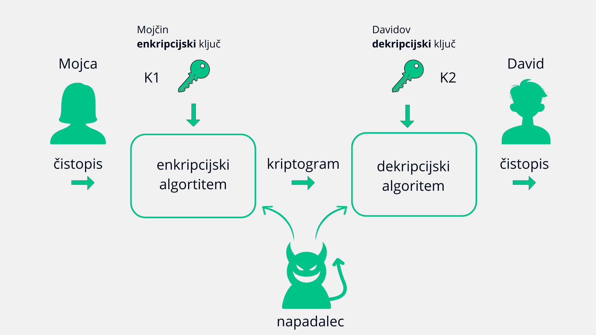

Vse o šifriranju, varnosti in zaupanju v digitalnem svetu.
Izziv zate: Nekje na tem spletišču se skriva beseda zakriptirana s Cezarjevim kriptogramom, če jo odkriješ boš dobil/a geslo za vstop v razdelek "Preizkusi se".
|
Namig se nahaja na strani "V šolstvu" na naslovni fotografiji. |
Na začetku strani "V šolstvu" je na tabli zapisana kriptirana beseda. Geslo za vstop v "Preizkusi se" dobiš tako, da vsako črko za tri mesta premakneš po abecedi nazaj. |
Kriptografija je pod disciplina kriptologije, katere ime izhaja iz grških besed "krypto" in "logos" ter
pomeni "skriti zapis" oz. zakriti sporočilo. Ukvarja se s pretvorbo podatkov v obliko, ki je nepooblaščenim osebam nerazumljiva.
Nasprotno pa se kripotanaliza ukvarja s poskusi razbijanja teh zaščit - torej z ogrožanjem varnosti, ki jo kriptografija zagotavlja.
Obe disciplini temeljita na matematiki.
(Liu idr., 2009)
Zgodovinsko se je kriptografija uporabljala predvsem v vojaške in diplomatske
namene za zaščito zaupnih sporočil. Z razvojem računalništva v 20. stoletju pa je doživela
izjemen napredek in postala ključno orodje digitalne dobe. Sodobna kriptografija
omogoča zaščito uporabniških podatkov pred hekerji, kibernetskim kriminalom in drugimi nevarnostmi.
(Liu idr., 2009)
Podatki in informacije so dostopni in uporabni le pošiljatelju in prejemniku. S kriptiranjem zaščitimo sporočilo pred nepooblaščenimi osebami.
»Je bilo spremenjeno?«
Sporočilo med prenosom ne sme biti spremenjeno. Kriptografski podpis omogoča zaznavo in preprečevanje nepooblaščenih sprememb.
»Kdo si?« in »Dokaži, da si to res ti.«
Prepoznavanje in dokazovanje identitete pošiljatelja in prejemnika.
»Si res prejel, si res poslal?«
Zagotavlja, da nihče, ki sodeluje v izmenjavi podatkov, ne more zanikati, da je poslal ali prejel sporočilo.
(Liu idr., 2009)

Za lažje razumevanje najprej spoznajmo nekaj osnovnih pojmov. Predstavljajmo si, da Mojca želi poslati sporočilo Davidu. Sporočilo, ki ga želi poslati, imenujemo čistopis (ang. plaintext) - to je berljivo izvorno besedilo. Mojca želi preprečiti, da bi sporočilo prebral napadalec, zato ga pretvori v kriptogram (ang. ciphertext) - nerazumljivo obliko besedila. (Liu idr., 2009)
Za pretvorbo čistopisa v kriptogram uporabi enega izmed znanih postopkov zakrivanja podatkov, imenovanega enkripcijski algoritem in enkripcijski ključ K1, ki deluje kot vhodni podatek izbranega algoritma. David za razvozlanje potrebuje ustrezni dekripcijski ključ K2, s katerim ponovno pridobi čistopis. (Liu idr., 2009)
Glede na odnos med ključema ločimo:
(Liu idr., 2009)
Danes s ta v uporabi dve glavni vrsti šifriranja: simetrična kriptografija in asimetrična kriptografija. Obe vrsti uporabljata ključe za šifriranje in dešifriranje podatkov, ki se pošiljajo in prejemajo. Obstaja tudi hibridni kriptosistem, ki združuje oba pristopa. (IBM, b. d.; Liu idr., 2009)
| SIMETRIČNA KRIPTOGRAFIJA | ASIMETRIČNA KRIPTOGRAFIJA |
|---|---|
| Uporablja en sam ključ za šifriranje in dešifriranje | Uporablja dva ključa: javni in zasebni ključ |
| Ključ je potrebno varno deliti | Javni ključ je razkrit, zasebni pa ostane skrit |
| Hitro šifriranje in dešifriranje, primerna za velike količine podatkov | Počasnejše šifriranje, primerno za manjše količine podatkov |
| Primeri: AES, DES | Primeri: RSA |
| Uporaba: VPN, diskovno šifriranje, arhivi | Uporaba: SSL/TLS, digitalni podpisi, e-pošta, varna izmenjava ključev |
(IBM, b. d.; Liu idr., 2009)